About a week after the KL tour, a friend from Pontianak messaged me. "Tez, come to Kuching. We have a mini tournament." Four teams, good opposition, and a Gapdol 9000 squad full of players who could actually play. Okay. Now you have my attention.
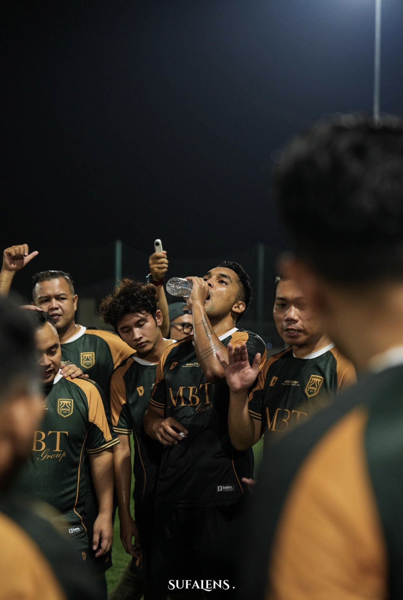
Two Hours. Allegedly.
September 23 to 27, 2026. The boys travelled from Pontianak by shuttle van. I was coming from Jakarta, so I flew. Different routes, same destination: Kuching, Sarawak.
I landed first on the 23rd. They said they would arrive about two hours after me, so I stayed at the airport. Reasonable decision with the information available.
PRANKKKK. They arrived five or six hours after I did. Two hours had apparently been more of a concept than an actual estimate. I gave up waiting, went to the hotel, and rested.
That night was just dinner and hanging around the hotel together. Everyone was tired, which was fair. Pontianak to Kuching is a long journey, especially when you are doing the whole thing on the road. No big plans. Just food, the boys, and finally being in the same place.
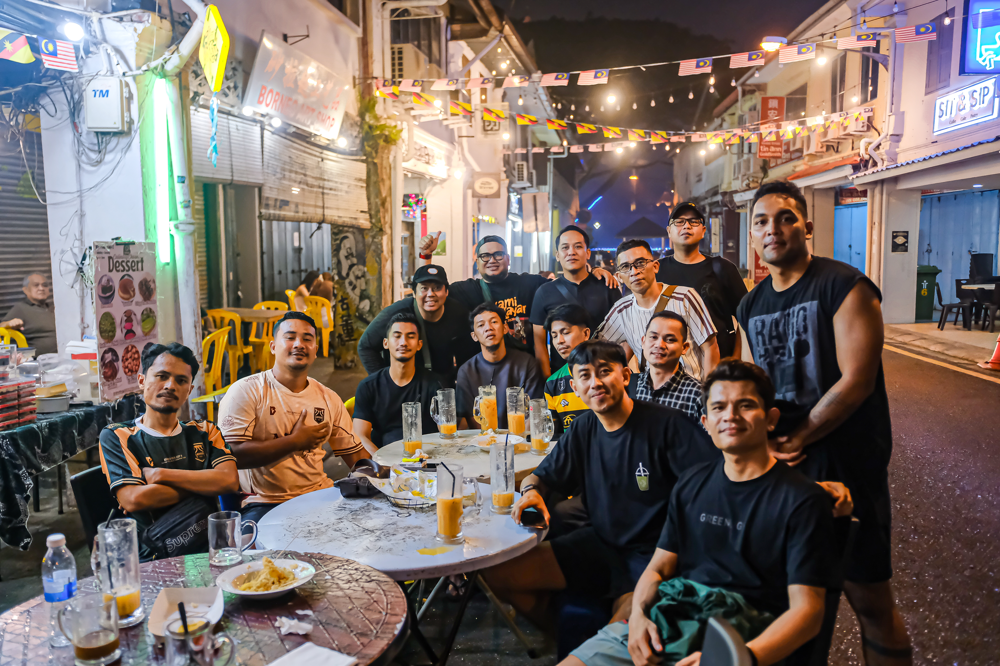
A Good Start. And Nasi Lemak.
The next day we went out, walked around, and ate. Nasi lemak, roti canai, the usual introductions. Kuching felt small enough that we kept ending up around the same places. You learn your way around pretty quickly when the itinerary starts repeating itself.
That evening we had a friendly against DID Sarawak at Cascara Arena. First reaction: WOW. The pitch was beautiful. Pontianak, we need to have a conversation hahaha.
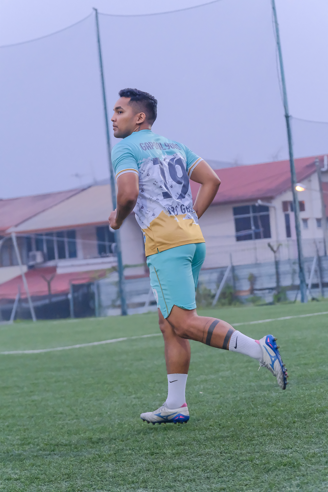
The match was intense but clean. Everyone wanted to compete, nobody needed to send anyone home injured. We won 5:1. A very good start, but still only a friendly. The actual tournament started the next day.
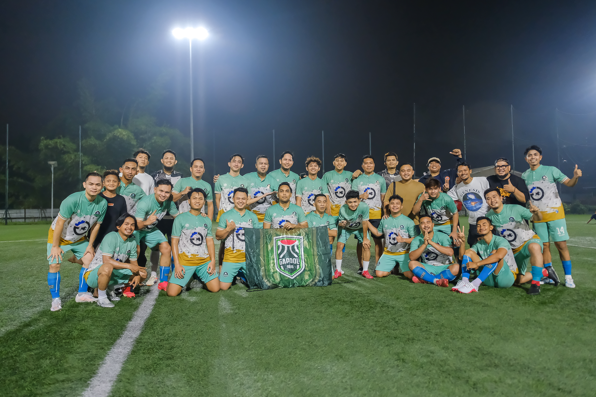
Nine. Yes, Nine.
We started the morning in the hotel lounge. Games, talking, laughing at whatever the boys were saying. Very productive use of a morning, in my opinion.
Lunch was nasi lemak. Again. Guys, I am not exaggerating when I say we ate it every single day. I know people love it. I am simply not one of those people. I lost two kilos during this trip because my appetite had basically resigned. Eating because I needed to, not because I wanted to. An unfortunate situation for someone who usually makes food half the point of travelling.
We also went thrifting. Thought I might find something cheap. Then I converted the prices into rupiah. Even secondhand clothes were making me reconsider my financial decisions. Put that back, Tez.
That night, Yetboi at Cascara Arena. First tournament match. We won 9:0. Yes, nine. It reads like a futsal score, but it happened on a football pitch. We played well, kept control of the tempo, and built a very useful goal difference. I was happy. Very happy, actually.
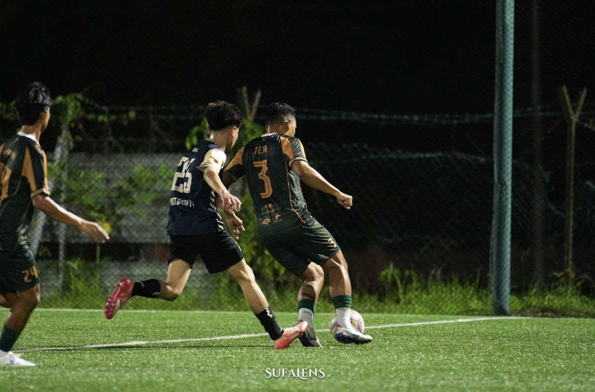
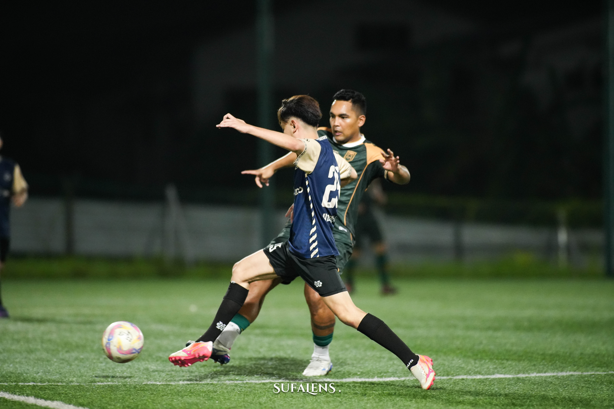
Afterwards we went to a nearby foodcourt and I finally found fried rice. Finally! Then I tried it and somehow the seasoning reminded me of nasi lemak again. Bro. I cannot escape.
The dessert saved the night. Fried bananas with cheese and condensed milk. I ordered the jumbo portion, and for once the word jumbo was not marketing. They could not properly close the container. Had to use a rubber band to hold it together. Finally, food that made me smile. Respect to whoever decided that was an acceptable portion.
Coffee First. Modelling, Apparently, Second.
Next morning we followed a very important Pontianak tradition: nongkrong without an obvious end time. Found a good café, had good coffee, sat around. Now this part of the itinerary I understood completely.
Lunch? You already know what everyone was having. I ordered roti canai with curry instead. Thankfully they had it. A small personal victory.
Then we went to a park around the city square, where I somehow became a model for Born Jersey, the vendor behind our kits. Came to Kuching to play centre back. Ended up posing for jersey photos. Apparently this face can sell something after all hahaha.
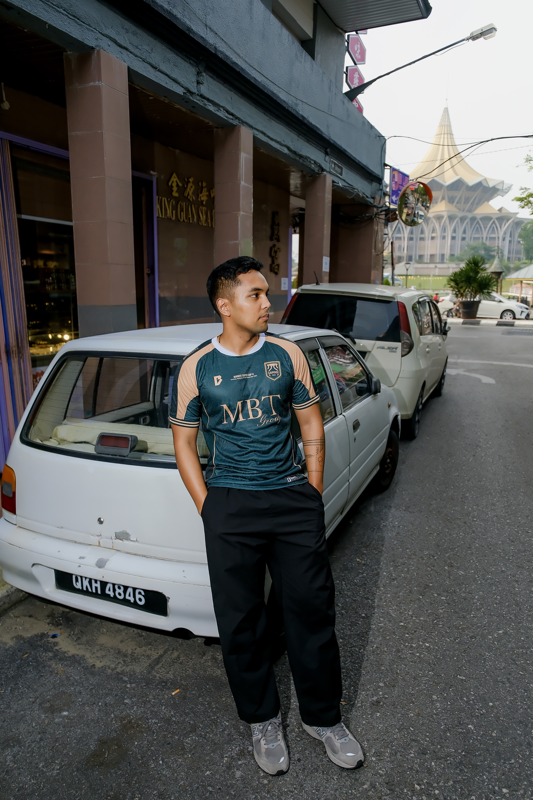
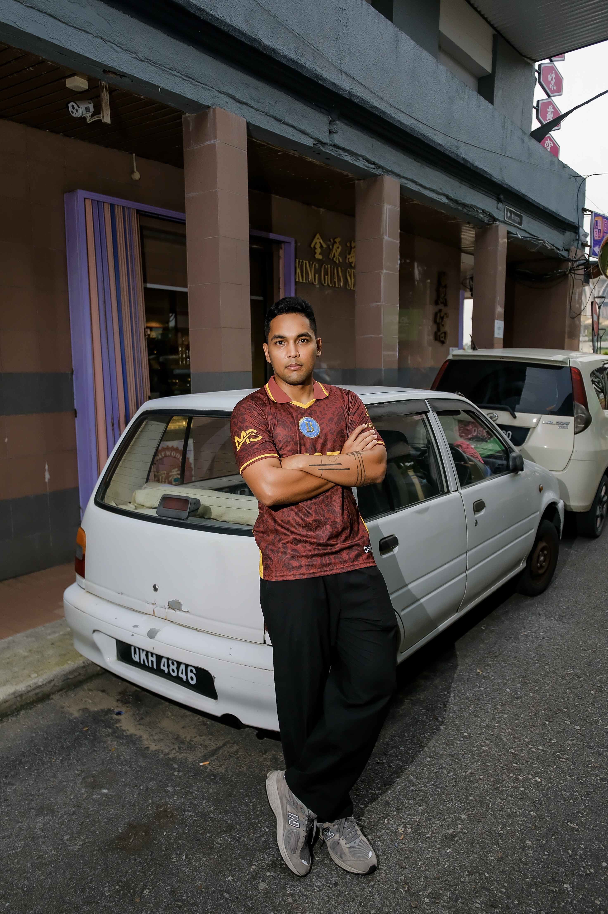
Also found apong ice cream there. Vanilla ice cream with palm sugar sauce, plus toppings like Oreo, cereal, and crushed peanuts. It was so good. Honestly, so good. Between this and the jumbo fried bananas, dessert was doing a lot of work keeping this trip together.
A bit of walking around the mall after that, then back to the pitch. Two matches that night. This was where the tournament would be decided.
Brave FC. Nothing Easy About It.
First up: Brave FC, the defending champions and the team to beat. You could feel the difference immediately. Attacks at both ends, body challenges, chances coming and going. The kind of match where your adrenaline handles the running for a while and your legs complain about it later.
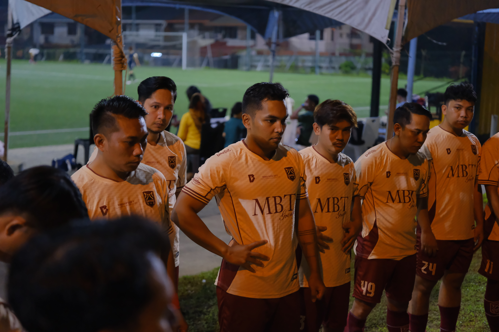
I played the full match. We had chances, they had chances, and a lot of opportunities went nowhere. Full time: 0:0. No goals, but absolutely not a quiet game.
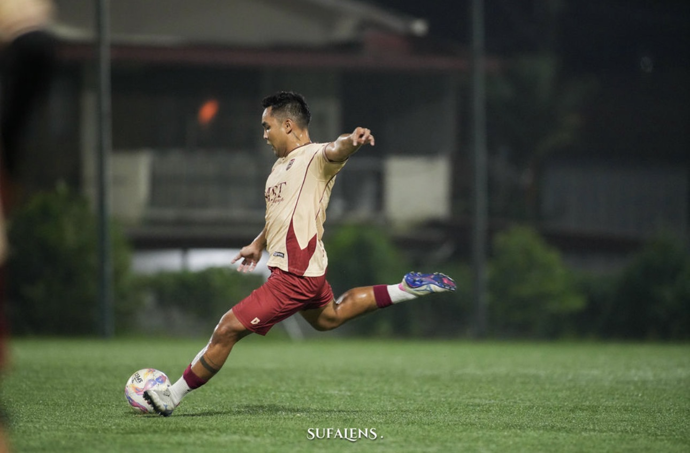
That left Apollo FC. The situation was simple enough: a win, even 1:0, would make us champions. A draw meant second. A loss meant third. If we failed to win, Brave kept the title. No pressure or anything.
Apollo FC. Ten Men, Still Going.
About ten minutes in, one of our players got a straight red. I am still annoyed about this. From where I was standing, the decision made no sense. The incident happened right in front of the assistant referee, who did not raise the flag, and suddenly we were a man down. There was a long stoppage while we protested. Let's just say I did not leave with a high opinion of the refereeing.
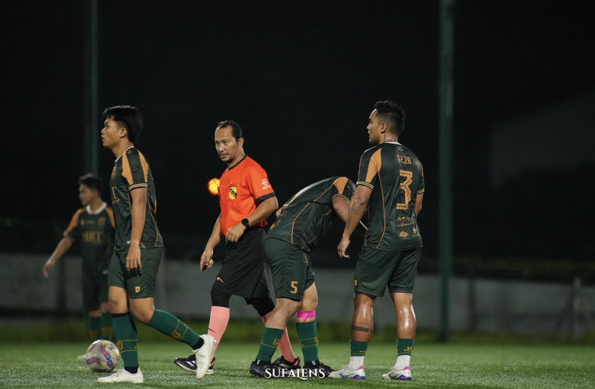
But we kept going. Ten men, still trying to win the whole thing. We went into half time 1:0 down.
I was playing centre back, and I stayed on for the full match again. Across the games, I was the one player who never got substituted. I am proud of that. The team trusted me to keep going, and I could. Small thing to some people, big thing to me.
Second half, I got an assist and we pulled it back to 1:1. Then we kept attacking. I reckon we created ten to fifteen chances, including three or four one on ones with the keeper, and still could not find the winner. At some point I was half centre back, half midfielder, running forward and back because I wanted that goal so badly. Tactical discipline was having a difficult evening hahaha.
The score stayed 1:1 until the final whistle. Second place for us. Brave FC stayed champions.
We were angry. Of course we were. I came expecting to win, and all of us worked like we meant it. But the red card was not the whole story. Even with ten men, we had enough chances. We did not finish them. That part belonged to us, and we had to be honest about it.
Second Place. Mixed Feelings.
After the match we talked through everything, then went out to eat together. A celebration, technically. You could still see the disappointment on everyone's face. Nobody was particularly good at hiding it.
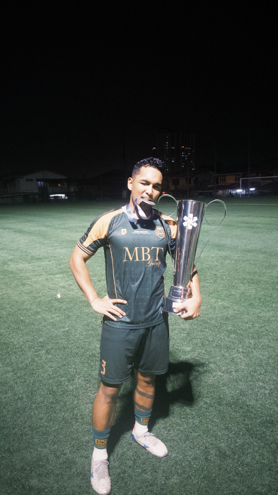
But everyone finished healthy. Nobody injured. That matters, especially after a night like that. We had things to learn, things to practise, and a lot of chances to remember the next time we were in front of goal.
After a long night, finally some rest. I flew back to Jakarta the next morning. Completely tired. Happy that I had given everything I had. Still unhappy with the result. Both feelings came home with me.
So was it a good trip? Yeah. Am I over finishing second? Working on it.
See you on the next one.